Create a Report Parameter
This topic demonstrates how to create a report parameter in the Report Designer. The topic also describes the options you can specify for a report parameter.
Create a Report Parameter in the Report Designer
In the Report Designer, you can create a parameter from the Field List, Properties window, or FilterString Editor. The created parameter appears in the Field List's Parameters node.
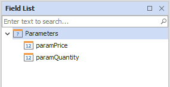
Create From the Field List
Right-click the Parameters node in the Field List and select Add Parameter.
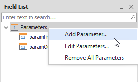
Specify parameter options in the invoked Add New Parameter dialog and click OK.
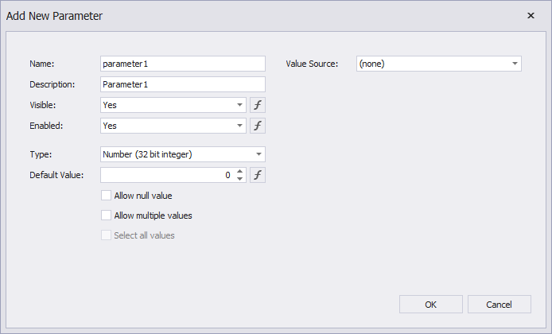
Create From the Properties Window
Select a report and click the Parameters property's ellipsis button in the Properties window.
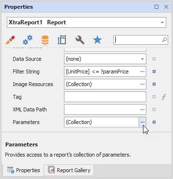
Click Add in the invoked Report Parameters Editor dialog to add a new parameter. Specify parameter options and click OK.
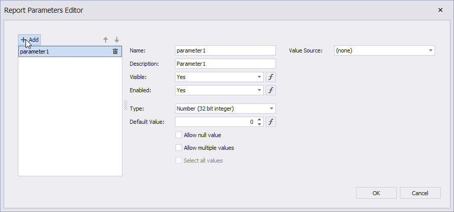
Create From the FilterString Editor
You can create a parameter when you construct a condition in the FilterString Editor. Choose the Select a parameter field, click the field, and select Add Parameter in the invoked context menu.
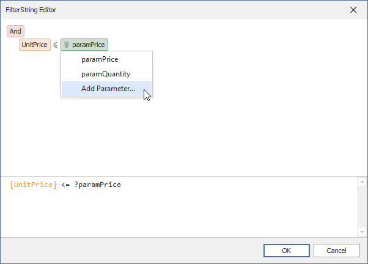
Specify parameter options in the invoked Add New Parameter dialog and click OK.
Parameter Options
Name
The name by which you can reference a parameter in a report. Note that report parameters should have unique names.
Description
A parameter description that appears on a report's Print Preview in the Parameters panel.
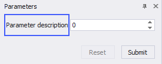
Visible
Specifies whether a parameter is visible in the Parameters panel.
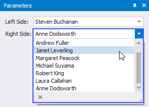
You can assign an expression to this option. The example below specifies an expression that shows/hides a parameter based on a value of another parameter.
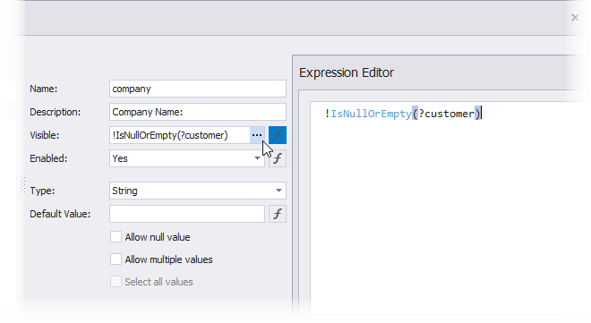
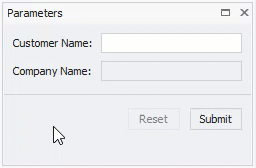
Enabled
Specifies whether a parameter editor is enabled or disabled in the Parameters panel. You can set this option to No to make a parameter's default value read-only.
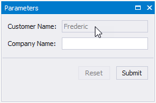
You can also assign an expression to this option. The example below specifies an expression that enables/disables a parameter's editor based on a value of another parameter.
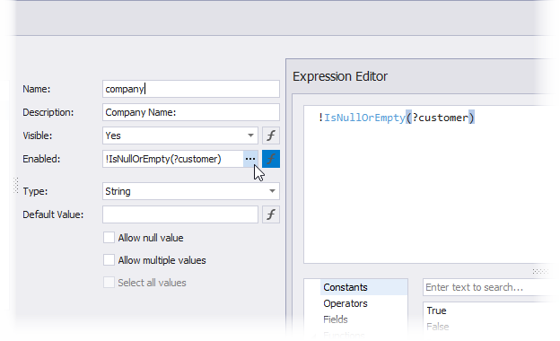
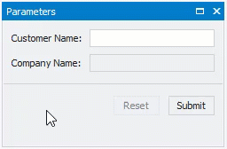
Type
The type of parameter values. The following types are available:
- String;
- Date and Time;
- Date;
- Time;
- Number (16-bit integer);
- Number (32-bit integer);
- Number (64-bit integer);
- Number (floating point);
- Number (double-precision floating point);
- Number (decimal);
- Boolean;
- GUID (Globally Unique Identifier).
Default Value
A parameter's default value. This value is displayed in the Parameters panel when you open a report's Print Preview.
You can specify an expression for this option. For example, set this option to Now() to use the current date as a date parameter's default value.
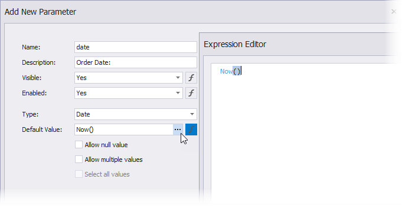
Note
You can use only constants, operators, and date-time / logical / math / string functions in an expression for a parameter's default value.
Allow Null Value
When the Allow Null Value option is enabled, you can leave the parameter's value unspecified.
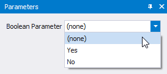
Allow Multiple Values
When the Allow Multiple Values option is enabled, you can specify multiple values for a report parameter.

Select All Values
Enable the Select All Values option to use all elements from a custom set of values as a parameter's default value.
Note
You can specify the Select All Values option only when the Allow Multiple Values option is enabled.
Value Source
Use the Value Source option to specify a custom set of values a parameter can accept. You can create a static list of values, load values from a data source, or specify a date range. Refer to the following topics for more details: